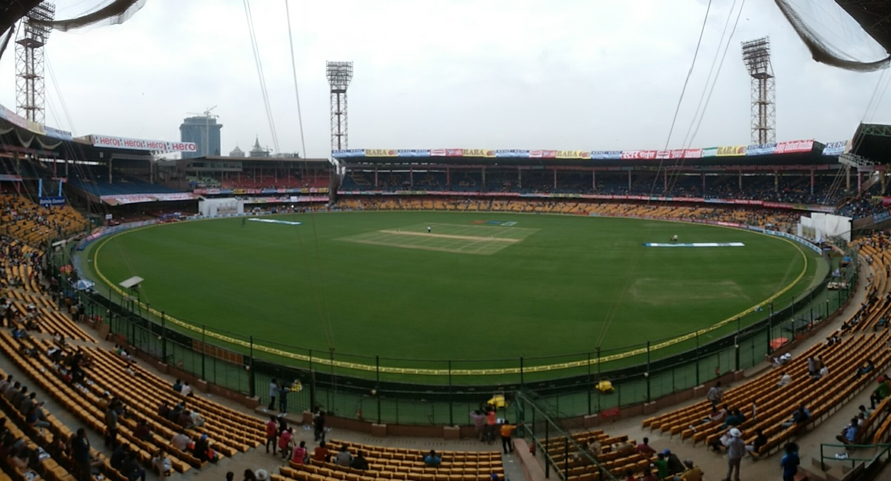

Chinnaswamy Stadium
 Chinnaswamy Stadium, officially known as M. Chinnaswamy Stadium, is an international cricket stadium located in Bengaluru, India. Established in 1969, it is one of the premier cricket venues in India with a seating capacity of around 40,000. The stadium is owned by the Karnataka State Cricket Association (KSCA) and serves as the home ground for the Royal Challengers Bangalore (RCB) in the Indian Premier League (IPL).
Chinnaswamy Stadium is renowned for its unique architecture and vibrant atmosphere. It has hosted numerous significant matches, including several World Cup games and the inaugural match of the Indian Premier League in 2008. The stadium has witnessed remarkable performances and is considered a crucial venue in Indian cricket history.
History
 The stadium was established in 1969 and named after M. Chinnaswamy, a former president of the Karnataka State Cricket Association. The venue has undergone several renovations to modernize its facilities and enhance the spectator experience.
The stadium was established in 1969 and named after M. Chinnaswamy, a former president of the Karnataka State Cricket Association. The venue has undergone several renovations to modernize its facilities and enhance the spectator experience.
The first Test match at Chinnaswamy Stadium took place in 1974 between India and Australia. Over the years, the stadium has hosted numerous historic matches, including the 1987 Cricket World Cup and the 1996 World Cup matches. The stadium is known for its electrifying atmosphere, particularly during IPL matches, where it often sees packed crowds.
Chinnaswamy Stadium has been the site of memorable moments in cricket history, including India's famous victory against Australia in the 2001 Test series, where VVS Laxman and Rahul Dravid led a remarkable comeback. The stadium is also notable for its significant renovations ahead of major tournaments, including a notable expansion of seating capacity and modernizing facilities in the 2000s.
The stadium is located in the heart of Bengaluru, surrounded by lush gardens and historic landmarks, making it a popular venue not just for cricket but also for other events, including concerts and cultural festivals.
About Chinnaswamy Stadium
M. Chinnaswamy Stadium is one of the most iconic cricket stadiums in India, celebrated for its rich heritage, vibrant crowd, and state-of-the-art facilities. With a seating capacity of approximately 40,000, it has become a significant part of Bengaluru's cultural landscape and the Indian cricketing ethos.
The stadium has played host to many significant international matches, including World Cup games and T20 internationals. As the home ground for Royal Challengers Bangalore, it is often filled with passionate fans who create an electric atmosphere during IPL matches.
Chinnaswamy Stadium is also known for its compact size and steep stands, which contribute to the close interaction between players and spectators. The stadium has seen record attendances, with fans coming together to support their teams.
In addition to cricket, the venue has hosted various cultural events and concerts, showcasing its versatility as a premier venue in Bengaluru.
Location and Significance
Location: Chinnaswamy Stadium is located in the heart of Bengaluru, Karnataka, India, near the Cubbon Park and the Vidhana Soudha, the state's legislative building.
Owner: The stadium is owned and operated by the Karnataka State Cricket Association (KSCA), which plays a crucial role in promoting and organizing cricket in the region.
Facilities at Chinnaswamy Stadium
Chinnaswamy Stadium boasts modern facilities that cater to players, officials, and spectators, making it one of the premier cricket venues in India. Here are some key facilities offered:
- Seating Capacity: The stadium has a seating capacity of around 40,000, providing great views for spectators.
- Clubhouse: The clubhouse includes amenities for players and officials, including lounges and meeting rooms.
- Player Facilities: The stadium features modern dressing rooms, practice nets, and training areas equipped with top-notch facilities.
- Media and Press Facilities: There is a dedicated media center with press boxes and high-speed internet for broadcasters.
- Corporate Boxes: Luxury corporate boxes are available for sponsors and VIP guests, offering premium seating and dining options.
- Floodlights: The stadium is equipped with high-quality floodlights, enabling day/night matches.
- Advanced Drainage System: An advanced drainage system ensures quick recovery of the outfield after rain.
- Food and Beverage Stalls: Numerous stalls and food courts provide refreshments for the audience during matches.
- Parking Facilities: Ample parking is available for vehicles on match days to accommodate large crowds.
- Public Restrooms: Clean and well-maintained restrooms are available throughout the stadium for spectator convenience.
Practice Ground at Chinnaswamy Stadium
 The practice ground at Chinnaswamy Stadium is well-maintained and adjacent to the main stadium. It is used for training and practice sessions by both domestic and international teams. The ground features grass nets and modern facilities, providing an ideal environment for players to prepare.
The practice ground at Chinnaswamy Stadium is well-maintained and adjacent to the main stadium. It is used for training and practice sessions by both domestic and international teams. The ground features grass nets and modern facilities, providing an ideal environment for players to prepare.
During the IPL season, the practice ground is utilized by Royal Challengers Bangalore (RCB) and other teams for training sessions. The facility is equipped with floodlights to accommodate evening practices.
Additionally, the practice ground occasionally hosts coaching clinics and camps to nurture young cricketing talent in the region, allowing aspiring players to train at this prestigious venue.
Future upgrades are planned for the practice facilities, ensuring they continue to meet the evolving needs of players and coaches.
Tours of Chinnaswamy Stadium
Chinnaswamy Stadium offers guided tours that immerse visitors in the rich history and significance of this iconic cricket venue. Tours typically include:
- Access to the historic pavilion and player areas
- A visit to the KSCA Museum, showcasing memorabilia and exhibits
- A stroll across the lush outfield and onto the pitch
- Insights into cricketing legends, unforgettable matches, and memorable moments that have taken place here
All tours are led by knowledgeable guides who share fascinating stories and facts about Chinnaswamy Stadium, from its inception to its role in major cricket tournaments. Book your tour in advance to ensure availability and enjoy a unique experience at one of the world's celebrated cricket venues!
Gallery
A breathtaking view of Channaswamy , showcasing its vast seating and vibrant atmosphere during matches.


The Pavilion at Channaswamy, an iconic structure that holds a rich cricketing history.


Visual M. Chinnaswamy Stadium Ground
Experience the magnificent M. Chinnaswamy Stadium Cricket Ground in motion. Watch the video below:
Conclusion
M. Chinnaswamy Stadium stands as a testament to India's rich cricketing heritage and the passion of its fans. With a history steeped in remarkable performances and a modern approach to facilities, it continues to be a central hub for cricket in India. Whether it's a thrilling IPL match or an international clash, the atmosphere at Chinnaswamy Stadium is unparalleled, making it a must-visit for cricket enthusiasts and tourists alike.